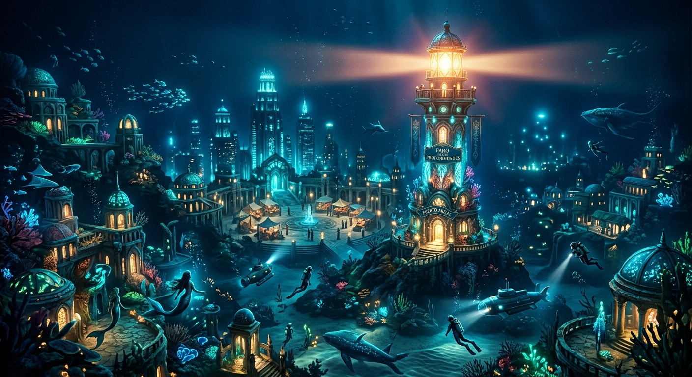
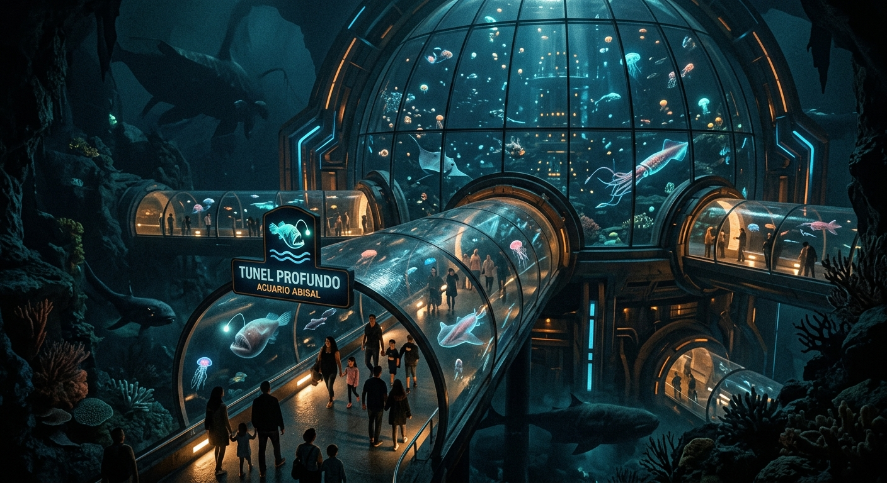

Principales lugares de interés
Faro de las Profundidades

El Faro de las Profundidades es uno de los símbolos
más importantes de Puerto Abisal. Fue construido
para orientar a los barcos que ingresan a la bahía.
Ubicación: Acantilados del Norte.
¿Qué se puede hacer?
Los visitantes pueden recorrer el faro, observar
la bahía desde su mirador y conocer su historia.
¿Por qué visitarlo?
Es un lugar ideal para disfrutar de las vistas
panorámicas de la ciudad y del océano.
Acuario Abisal

El Acuario Abisal es uno de los principales centros
turísticos y educativos de la ciudad. Cuenta con
enormes túneles submarinos y diferentes especies
marinas.
Ubicación: Distrito Portuario.
¿Qué se puede hacer?
Se pueden recorrer los túneles submarinos, participar
de visitas guiadas y conocer diferentes especies
del océano.
¿Por qué visitarlo?
Es una propuesta ideal para conocer la vida marina
y aprender sobre el ecosistema de la región.
Distrito Coral

El Distrito Coral es una de las zonas más llamativas
de Puerto Abisal. Sus edificios y espacios públicos
están inspirados en las formas y colores de los
arrecifes de coral.
Ubicación: Zona Este de la ciudad.
¿Qué se puede hacer?
Los visitantes pueden recorrer sus calles, conocer
los mercados locales, visitar restaurantes y participar
de eventos culturales.
¿Por qué visitarlo?
Es una de las mejores zonas para conocer la cultura,
la gastronomía y la vida cotidiana de Puerto Abisal.